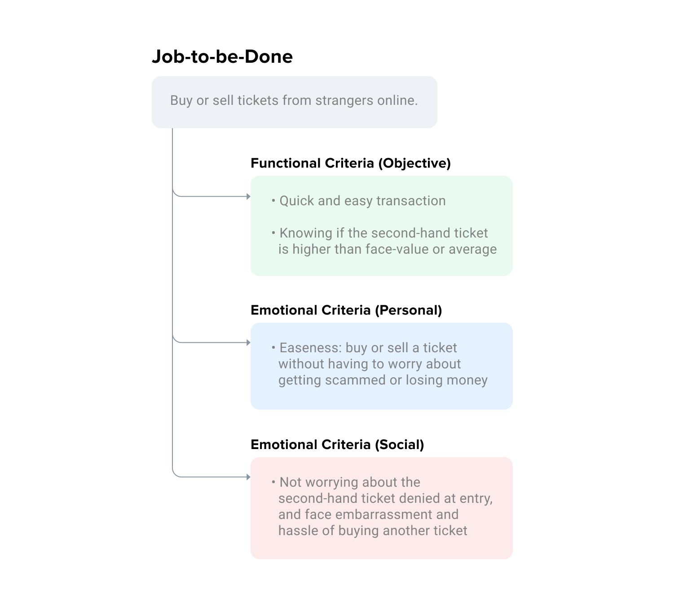
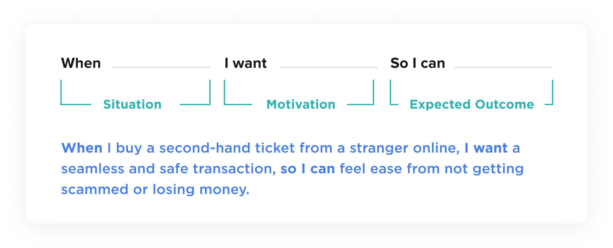

Swap [working name]
Jan 2019
In the Entertainment industry, there is a risk of selling second-hand tickets due to scammers and scalpers. As seen online, usually on Facebook or any other social media platforms, there are always people sharing stories of how they’ve been scammed or to watch out for the person that scammed them.
There are currently no mechanisms in place to perfectly trade second-hand tickets. TicketMaster partially fixed this problem by being able to transfer your ticket to another person but there is still the friction of the transaction or possibility of getting scammed because both transactions do not occur concurrently. The experience can be much better and easier than current methods. This platform is not a marketplace but is more of a tool to assist with the current ticket-trading methods.
What problem is this platform solving?
When buying and selling second-hand tickets, there is always some sort of distrust between both parties. There is always emotion associated with these transactions as there's always a risk of losing money. The problem I’m trying to solve is the ability for others to trust each other online and making the second-hand ticket trading experience easier for users.
User Research
The purpose of this research is to collect qualitative data to understand a user's emotions when they buy or sell second-hand tickets online and to listen to anecdotal stories related to this experience. For my research, I interviewed five users.
Insights
Buyers and sellers will mainly use Facebook as a marketplace for second-hand tickets as there are much more people trading there. Prices are also closer to face-value than a second-hand trading marketplace such as StubHub. People will be typically looking for tickets on the event’s Facebook event page or music-related groups.
- When buying a second-hand ticket from strangers on social media such as Facebook, they will try identifying if the seller is a scammer or not by looking at their profile details such as mutual friends, posts and photos
- Even though the other party may seem trustworthy, people will still have the thought of a possibility of getting scammed or cheated for their money
- Users don’t like using second-hand ticket marketplaces such as StubHub because there's no face to the seller and prices are much higher. A study by Adventus has also said that people view these second-hand ticket marketplaces as unethical because of the higher prices (e.g. buying from scalpers and the fees associated with using these marketplaces).
- Users always have the fear of the ticket not scanning upon entry, which may cause embarrassment at the door and dealing with the hassle of finding and buying another ticket.
Ticket Types
Afterwards I looked at the type of tickets users would be buying or selling. This chart below explains what each ticket type is and how the ticket itself would be transfered to the buyer.
- Hardcopy/physical tickets: Transactions that are usually done in person. This platform would see no use in selling this type of ticket.
- Will call: Tickets do not exist yet. They would be picked up at a booth on the day of the event at the venue. This platform would talk to the ticketing company to transfer names for will call.
- E-tickets (attached): E-Tickets attached to a name or account. E.g. TicketMaster tickets. This platform would automatically transfer from one account to another (similar to TicketMaster transfer).
- E-tickets (unattached): E-tickets not attached to an account. The most susceptible type of ticket to get scammed. Usually comes in the form of a pdf. This platform would send the pdf/barcode to the buyer once the transaction is complete.
User Persona
After conducting my interviews, I synthesized my research and created a persona based on the users I interviewed.
Jobs-to-be-Done Framework
For this project I wanted to try creating a job story using the Jobs-to-be-Done Framework to understand what task the user is doing and why they would hire this product. Some people have said that the JBTD framework can replace personas but instead I used a persona to help me create a job story. For this framework, I took a look at three different criterias.
Afterwards I created a job story based on the three different criterias.
Task Flow
Before drawing wireframes, I decided to create the task flow of how transactions would work on Swap to better understand this system.
Initial Sketches
I always start off with drawing initial sketches in my sketchbook to help me explore concepts and trying different layouts.
Branding and Design System
Before designing screens on Figma, I created the branding for Swap. This would include typography and the colour palette that would be used.
I also create a design system that would go along with Swap. The image below shows variations of the components that I played with while designing Swap.